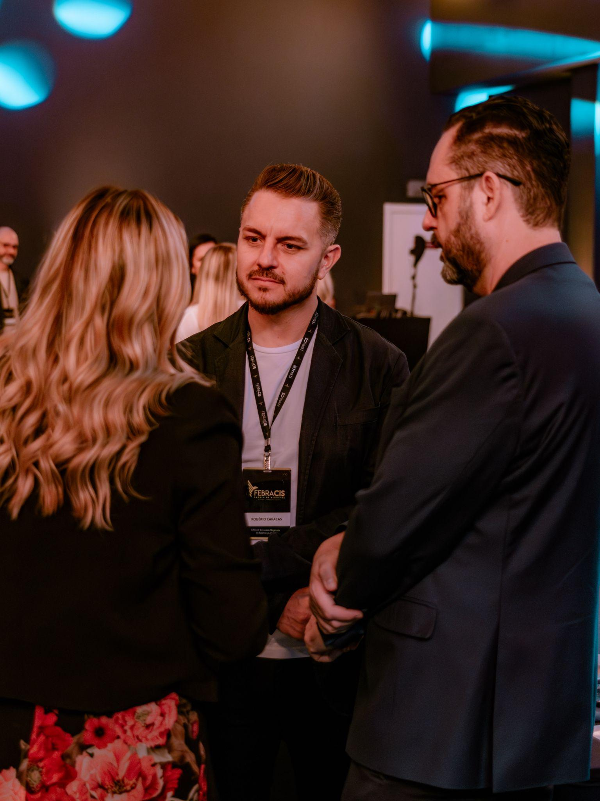
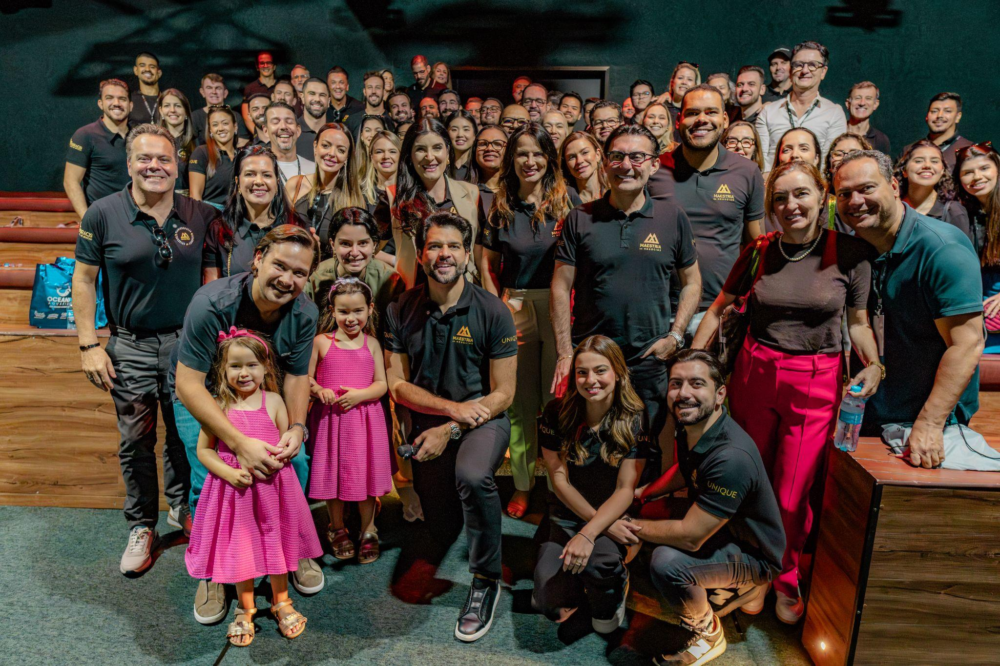

Apresentação e Proposta
Como apresentar a Maestria Global Business e construir uma proposta de R$ 85 mil que o empresário enxerga como barata.
Você não vai apresentar uma mentoria. Vai abrir a porta de um ecossistema contínuo de desenvolvimento empresarial — com Paulo Vieira no centro.
Venda o Ecossistema, Não os Encontros
"Mais do que uma mentoria ou encontros pontuais, é um ECOSSISTEMA CONTÍNUO de desenvolvimento empresarial." Essa é a frase-mestra. Tudo na apresentação orbita ela.
O closer que vende encontro (perde)
- "São 9 encontros com o Paulo e mais 9 táticos..."
- "Tem 3 imersões presenciais de 3 dias..."
- "Vem com ingressos de Assessment, BHP e FGPC..."
- Lista entrega como catálogo — e o lead soma preço por item
- Resultado: "me manda isso por escrito que eu analiso"
O closer que vende ecossistema (fecha)
- "Durante 12 meses, sua empresa passa a operar dentro de um ecossistema: estratégia, execução, rede e experiências — tudo integrado."
- "Não é um curso que acaba. É o ambiente onde seu negócio cresce o ano inteiro."
- "Os encontros são só a parte visível. O ativo é o acesso contínuo — a Paulo Vieira, aos experts e à sala."
- Resultado: o lead pergunta "como eu entro?"
Estrutura da Apresentação Premium
Espelho do Império
Abra falando do negócio dele: faturamento, time, momento. O empresário Maestria só ouve quem entendeu a empresa dele primeiro.
Dor do Topo
Nomeie o que ele sente e não diz: crescimento caótico, solidão do topo, preso na operação, decisões sem conselho qualificado.
Custo de Continuar Só
Traduza em dinheiro: cada decisão estratégica errada por falta de conselho custa mais do que o ano inteiro de Maestria.
O Ecossistema
Apresente a jornada pelas 5 frentes — nunca pela lista de entregas. O produto é o ambiente, não a agenda.
A Sala e o Mentor
Paulo Vieira como ativo central + a sala com os maiores empresários do Brasil e conexões internacionais.
Proposta Ancorada
Só depois de tudo isso: R$ 275 mil de valor somado pelo investimento de 12x R$ 8.500. Aí o preço parece pequeno.
Premium se apresenta em ordem: primeiro a dor do topo e a sala — o investimento entra por último, já pequeno.
Conectar Dor → Solução
Cada dor do empresário tem um endereço dentro do ecossistema. Decore as pontes.
A dor que ele verbaliza
- "Cresço, mas é caótico — sem estrutura"
- "No meu nível, não tenho com quem trocar"
- "Estou preso na operação, não lidero"
- "Decido sozinho, sem conselho qualificado"
- "Me falta rede — no Brasil e lá fora"
A ponte Maestria
- Desenvolvimento estratégico: mentoria direta com Paulo Vieira + 9 encontros estratégicos no ano
- Networking qualificado: sala com os maiores empresários do Brasil e da região
- 9 encontros táticos (Gente e Gestão · IA · Estratégia · Comercial · Marketing) para o negócio rodar sem o dono
- Mente Mestra (HotSeat): seu caso analisado por Paulo Vieira e pela sala
- Conexões internacionais: Interbusiness + rede em Boston, Lisboa, Luanda e Orlando
A Narrativa das 5 Frentes
A Jornada Integra é o seu roteiro de apresentação. Conte na ordem, como uma história — não como um índice.
Desenvolvimento Estratégico Empresarial
"Primeiro, a sua empresa ganha direção: mentoria com Paulo Vieira e encontros estratégicos o ano todo."
Networking Qualificado
"Depois, você entra na sala: os maiores empresários do Brasil trocando de igual para igual."
Conexões Internacionais
"Aí o jogo abre: Interbusiness e rede internacional — Boston, Lisboa, Luanda, Orlando."
Experiências Premium
"Você vive isso presencialmente: imersões de 3 dias, evento anual com Paulo Vieira, CIS Setor Black."
Curadoria Central
"E nada é solto: curadoria de conteúdo e direcionamento contínuo — alguém pensando a sua jornada."
Numere em voz alta: "são cinco frentes, e cada uma resolve uma dor sua". O empresário acompanha e se localiza.
Paulo Vieira como Ativo Central
A Maestria é o produto com mais acesso direto a Paulo Vieira em todo o ecossistema Febracis. Isso não se resume — se dramatiza.
Venda o acesso, não o conteúdo
"Você não está comprando aulas do Paulo Vieira — isso existe em vídeo. Você está comprando 12 meses de acesso: mentoria direta para o SEU negócio, com as SUAS decisões na mesa."
O momento HotSeat
"Na Mente Mestra, o caso analisado é o seu. Paulo Vieira e uma sala de empresários de alto nível debatendo a sua empresa. Quanto custaria contratar esse conselho?"
Os pontos de contato no ano
- Mentoria direta com Paulo Vieira para desenvolvimento estratégico
- 9 encontros estratégicos com Paulo Vieira (online e ao vivo)
- Mente Mestra (HotSeat) + 2 encontros online ao vivo com Paulo Vieira
- Evento presencial premium anual com Paulo Vieira
- Grupo fechado de WhatsApp — proximidade contínua
Storytelling: A Sala Certa
A história que você conta em 90 segundos — e que reposiciona o preço antes de ele aparecer.
Abertura
"Deixa eu te contar o que eu vejo acontecer com empresário do seu nível. Ele cresce, cresce... e um dia percebe que virou a pessoa mais experiente de todas as salas em que entra."
Ele se reconhece: é a solidão do topo dita em voz alta.
A virada
"E aí o crescimento trava. Não por falta de esforço — por falta de sala. Ninguém do lado para validar decisão, abrir porta, mostrar o erro antes de ele custar caro."
A dor vira diagnóstico: o problema não é ele, é o ambiente.
A sala certa
"A Maestria existe exatamente para isso: colocar você numa sala com Paulo Vieira, diretores Febracis e os maiores empresários do Brasil — durante 12 meses, não numa palestra de um dia."
A solução entra como ambiente contínuo, não como evento.
O convite
"A pergunta não é se essa sala funciona. É se você vai estar dentro dela este ano — ou vai decidir mais um ano sozinho."
Fecha com escolha binária: dentro da sala ou sozinho.
Networking como Alavanca de Negócios
Para o empresário Maestria, rede não é social — é comercial. Apresente o networking como linha de receita.
A sala nacional
Networking com os maiores empresários do Brasil e da região, convidados a nível nacional e grupo fechado de WhatsApp. "Quem está do seu lado na mesa vale tanto quanto quem está no palco."
A ponte internacional
Interbusiness Internacional — imersão global de negócios em ecossistemas internacionais de inovação — e a rede Febracis em Boston, Lisboa, Luanda e Orlando.
Rede que gera negócio
"Dentro da sala nascem sociedades, fornecedores, clientes e parcerias. Não é coffee break — é pipeline." Dê exemplos concretos do setor dele.
Script de venda da rede
"Me diz uma coisa: quanto vale para você sentar por 12 meses ao lado de gente que já resolveu o problema que você tem hoje?"

Gatilhos Mentais na Venda Premium
Autoridade
Paulo Vieira e diretores Febracis conduzindo pessoalmente. Você não vende um método — vende acesso a quem cria o método.
Exclusividade
Mastermind oficial da Febracis, para poucos. "Isso não é para todo aluno — é para empresário com negócio rodando."
Pertencimento
O empresário compra a sala tanto quanto o conteúdo: estar entre iguais e acima. Status é motor legítimo de decisão no high ticket.
Escassez Real
Turma com vagas limitadas e condição de turma com prazo. Janela, não catálogo — sem inventar urgência falsa.
Reciprocidade
Antes do pitch, entregue um diagnóstico do negócio dele. Quem recebe direção de graça imagina o que recebe pagando.
Contraste (Ancoragem)
R$ 275 mil de valor somado antes do investimento. O gatilho mais poderoso da proposta Maestria é a ordem dos números.
Construção de Autoridade
Você não precisa ser a autoridade — precisa apresentá-la com precisão. Decore as credenciais dos experts.
Vinicius David — IA
CGO na Birdie AI (Califórnia), formado em IA por Stanford, +15 anos em Fortune 100, autor do best-seller "IA para Líderes", LinkedIn Top Voice, instrutor UC Berkeley.
Rafael Galdino — Marketing
Ex-diretor de marketing da Febracis, +R$ 200 milhões faturados em lançamentos digitais, mentor de empresários que faturam 8 dígitos por ano.
Dani Pires — Comercial
Master Trainer, +32 mil horas de treinamento, +2.137 devolutivas CIS Assessment, mentora de vendas de +379 alunos.
Ramon Pessoa — Intel. Comercial
À frente de 3 empresas (R7 Treinamentos, Simplifica Gestão, BonuX). "Ensina o que faz, não o que leu."
Tiago Zanini — Estratégia
Especialista em sistemas de gestão que funcionam sem o dono; transforma crescimento caótico em escala estruturada.
Como usar na mesa
Não recite o time inteiro. Escolha o expert que resolve a dor citada e apresente só ele, com credencial completa: "para isso, você vai ter o cara que ___".
Demonstrando as Experiências
Experiência premium não se descreve em agenda — se projeta em cena. Faça o empresário se ver lá dentro.
Coloque-o na cena, não no cronograma
Errado: "tem 3 encontros presenciais de 3 dias com Diretor Febracis". Certo: "imagina você, 3 dias trancado com um Diretor Febracis e uma sala de empresários, desenhando o próximo ano da sua empresa — e voltando com o plano pronto".
O ápice internacional
"Uma vez por ano, o Interbusiness te coloca dentro de ecossistemas internacionais de inovação. Você volta com repertório que seu concorrente não tem."
O calendário de experiências do ano
- 3 encontros presenciais de 3 dias com Diretor Febracis + trainers Febracis
- Interbusiness Internacional — imersão global de negócios
- Evento presencial premium anual com Paulo Vieira
- 6 Método CIS presenciais Setor Black + 2 ingressos CIS Global transferíveis
- Assessment, BHP e FGPC inclusos — 1 ingresso pessoal + 2 transferíveis cada (leve sócio e sucessor)
A Proposta Irresistível
A Dor nas Palavras Dele
Abra a proposta com o que ele disse: "você me falou que decide sozinho e que o crescimento está caótico". Ele precisa se reconhecer na primeira linha.
O Destino
Escala estruturada, conselho qualificado do lado, rede nacional e internacional, e o mais alto nível de resultado empresarial.
O Ecossistema (5 frentes)
Apresente as entregas agrupadas nas 5 frentes da Jornada Integra — nunca como lista solta de 14 itens.
O Valor Somado
Empilhe o valor: encontros estratégicos, Interbusiness, formações inclusas, CIS Black... até chegar em ≈ R$ 275 mil.
O Investimento
Só agora: 12x R$ 8.500 ou R$ 85.000 à vista — sempre depois do valor somado e do custo da inação.
Um Único Próximo Passo
"Vamos garantir a sua vaga nesta turma?" Uma pergunta, uma data, um link (o link oficial da Maestria). Sem labirinto de opções.
Ancoragem: R$ 275 mil por R$ 85 mil
A conta é o coração da proposta. Empilhe o valor em voz alta antes de dizer o investimento.
O script da conta
"Somando o que está dentro — mentoria e encontros com Paulo Vieira, Interbusiness, imersões, formações, CIS Black — passa de R$ 275 mil. Seu investimento não é isso. É 12x de R$ 8.500. Você não está pagando o programa: está destravando ele."
Condição de turma
Em turma há condição especial (ex.: 50% OFF → 12x R$ 4.250 ou R$ 42.500 à vista, + segunda vaga com 50% OFF). Nota: valores de referência; confirme a condição vigente antes de ofertar.
Prova Social e Cases
No high ticket, o medo é errar sozinho. Prova social existe para dizer: "gente do seu nível já está dentro".
Use o par espelho
Cite o perfil de quem está na sala: empresários com negócio rodando, do porte e do setor dele. "Tem gente da sua cadeia lá dentro" vale mais que qualquer slide.
Estrutura do case
Antes (caos, solidão, operação) → dentro da sala (direção, conselho, conexões) → depois (escala estruturada, negócios fechados na rede). Curto, concreto, verificável.

O ROI de Estar na Sala Certa
Feche a apresentação com uma conta que o empresário faz de cabeça — e que fecha a favor dele.
O script do ROI
"Faz a conta comigo: se em 12 meses, dentro dessa sala, você fecha UMA parceria relevante ou evita UMA decisão errada de crescimento — quanto isso vale? Só isso já paga a Maestria. Todo o resto — Paulo Vieira, Interbusiness, imersões, formações — vira lucro."
Comunicação Não-Verbal
Você está vendendo alto nível para quem vive em alto nível. Seu corpo precisa falar de igual para igual.
Postura de Par
Nem reverência, nem arrogância. O empresário Maestria compra de quem senta à mesa como par — ombros abertos, ritmo calmo, zero pressa.
Contato Visual no Preço
Diga "12x de R$ 8.500" olhando nos olhos, sem piscar mais rápido nem baixar o tom. Quem desvia o olhar no número desvaloriza o próprio produto.
Espelhamento de Energia
Empresário direto: seja objetivo e traga números. Analítico: dê estrutura e as 5 frentes no papel. Relacional: comece pela sala e pelas pessoas.
Pausa de Peso
Depois de "R$ 275 mil de valor somado" — silêncio de 2 segundos. Depois do investimento — silêncio de novo. A pausa faz a âncora assentar.
Voz Premium
Tom grave, volume médio, velocidade menor que a habitual. Urgência na voz cheira a desconto; calma cheira a exclusividade.
Coerência Total
Se você diz "ecossistema para o mais alto nível" com postura encolhida, o corpo desmente a frase. Incoerência mata venda premium em silêncio.
Conduzindo a Reunião
Abertura de Par
Conexão rápida de empresário para empresário: mercado, momento, contexto. Sem bajulação.
Diagnóstico
Faça-o falar do crescimento, da estrutura e de com quem ele troca. Ele deve verbalizar a solidão do topo.
Implicação
Aprofunde: quanto custou decidir sozinho no último ano? Quanto custa mais um ano assim?
A Sala Certa
Conte o storytelling e apresente o ecossistema pelas 5 frentes, com Paulo Vieira no centro.
Prova
Experts com credenciais, perfil da sala, rede internacional. Reduza o medo de errar sozinho.
Empilhamento
Some o valor em voz alta até R$ 275 mil. Deixe a âncora assentar antes do próximo passo.
Proposta
12x R$ 8.500 ou R$ 85.000 à vista (+ condição da turma vigente). Contato visual e pausa.
Fechamento
"Vamos garantir a sua vaga nesta turma?" Objeção que surgir é matéria do Módulo 4.
Framework de Conversão
Os 4 estados mentais que o empresário precisa atravessar entre o "interessante" e o contrato assinado.
Admitir a dor do topo
Ele diz, em voz alta, que cresce no caos e decide sozinho. Sem essa admissão, não avance.
Acreditar no ecossistema
Ele entende que o problema é de ambiente — e que 12 meses de sala certa resolvem o que curso pontual não resolve.
Confiar no acesso
Paulo Vieira, diretores e experts com credenciais reais tornam a decisão segura. A âncora de R$ 275 mil torna o preço pequeno.
Decidir nesta turma
Condição de turma + vaga limitada + custo de mais um ano sozinho tiram o adiamento da mesa.
Conversão premium não é pressão. É remover, um a um, os motivos para o empresário passar mais um ano fora da sala.
Erros na Apresentação
- Vender encontros avulsos: listar "9 + 9 + 3 imersões" como catálogo. O produto é o ecossistema contínuo — a agenda é consequência.
- Chamar de curso ou mentoria local: a Maestria não é curso, não é mentoria local, não são encontros pontuais. Vocabulário errado rebaixa o produto.
- Dar o preço antes da âncora: falar "12x de R$ 8.500" sem antes empilhar os R$ 275 mil de valor somado. Preço sem âncora parece caro.
- Diluir Paulo Vieira: apresentá-lo como "um dos mentores". Ele é o ativo central — mentoria direta, 9 estratégicos, HotSeat, evento premium.
- Ignorar o networking: vender só conteúdo para quem tem fome de rede. Para esse ICP, a sala vale tanto quanto o palco.
- Prometer condição sem confirmar: citar 50% OFF de turma antiga como se fosse regra. Sempre confirme a condição vigente antes de ofertar.
- Encerrar sem pergunta de fechamento: terminar em "qualquer coisa me chama". Reunião premium termina com "vamos garantir a sua vaga?".
Checklist do Módulo
Minha apresentação está premium?
- Abro pela dor do topo, não pela agenda de encontros
- Conto a narrativa das 5 frentes na ordem, como história
- Tenho o storytelling "A Sala Certa" na ponta da língua
- Paulo Vieira aparece como ativo central, com todos os pontos de contato
- Empilho ≈ R$ 275 mil antes de dizer 12x R$ 8.500 / R$ 85.000
- Fecho com o ROI: "1 conexão pode pagar o programa"
- Confirmei a condição vigente da turma antes de ofertar
Próximos passos
- 24h: grave a narrativa das 5 frentes em 3 minutos e revise
- 48h: monte a proposta completa (6 blocos) para 1 empresário real da sua base
- 72h: treine a conta da ancoragem em voz alta até sair natural
- 5 dias: apresente a Maestria para 2 empresários qualificados
- Avance para o Módulo 4 — Negociação e Objeções
Apresentação fraca descreve encontros. Apresentação premium faz o empresário se ver dentro da sala — e o preço virar detalhe.